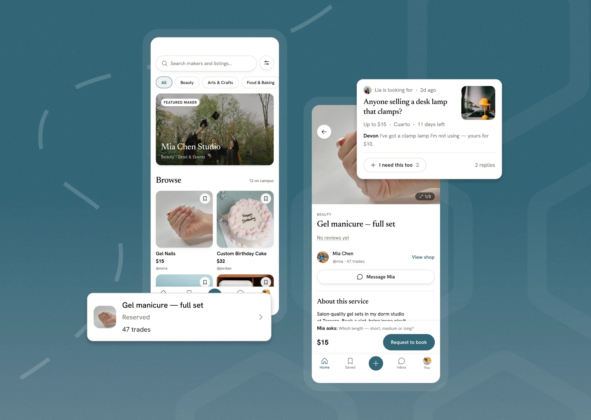
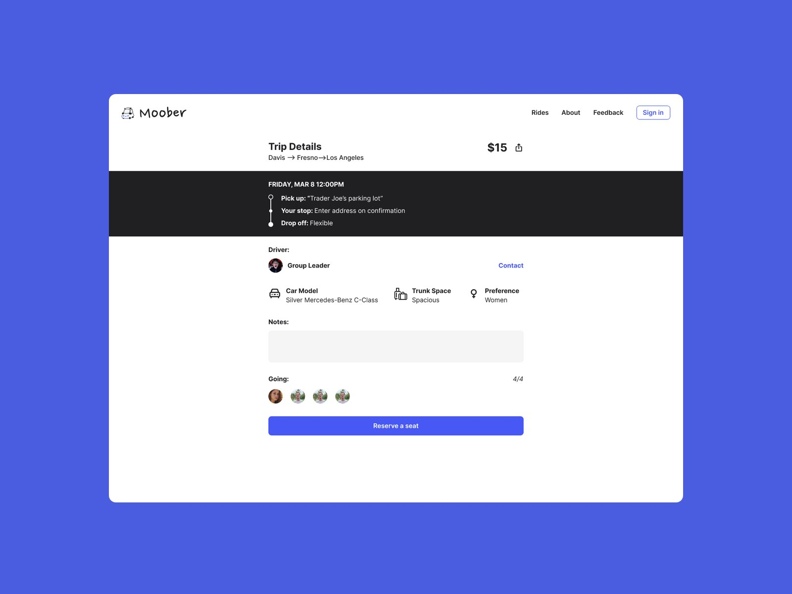
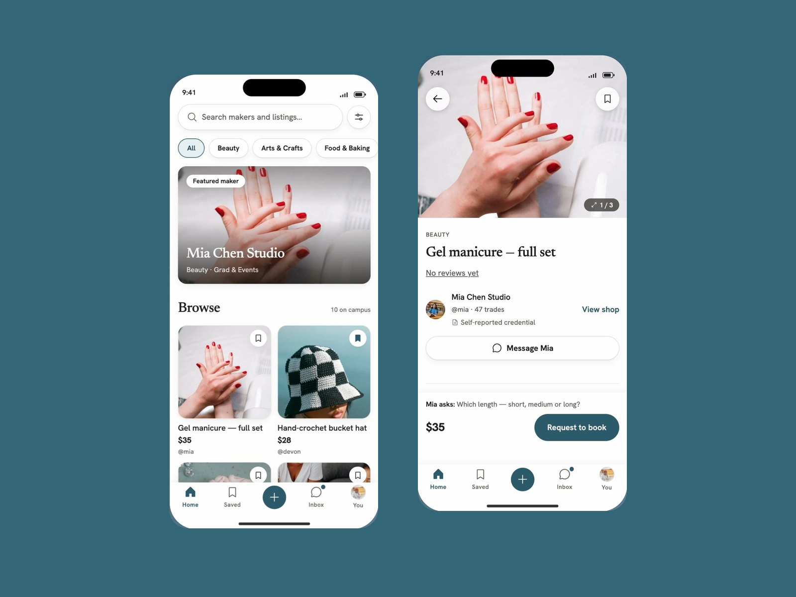
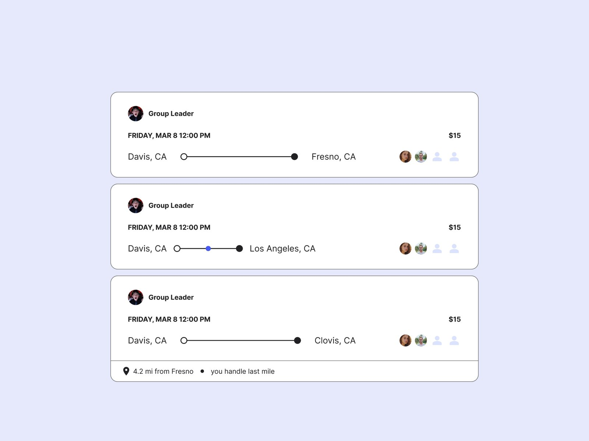
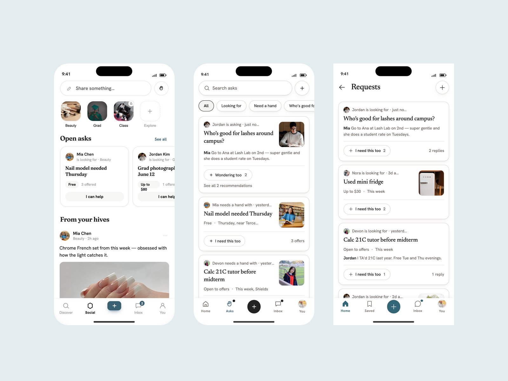

IIanMMooberBBuzzit
 MMoober · Finding rides that were already there
MMoober · Finding rides that were already there

BBuzzit · From "I want this" to "we met up"
MMoober · Trip details
BBuzzit · Home and listing
MMoober · Three tiers
BBuzzit · Requests, v1 to v3